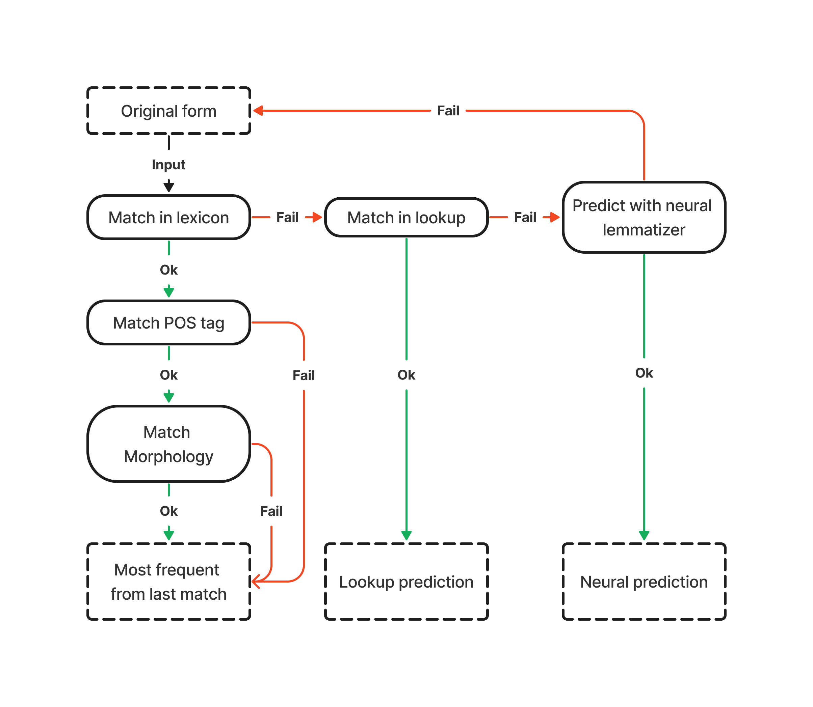

Pipeline Architecture#
Just like any other spaCy pipeline, odyCy is a modular set of components run in succession. The different components add different attributes to tokens or spans, which will constitute the output document object.

Transformer#
odyCy’s pipeline uses a single transformer model as its base layer, which produces context rich representations of tokens that can be used by other components for learning.
We decided to use Ancient Greek Bert which is a transformer pretrained on modern greek texts + ancient greek texts from the Perseus Digital Library and from the First Thousand Years of Greek Project.
This model was not freezed during training meaning it was finetuned for all downstream tasks simultaneously.
Computational Efficiency
Transformer models are generally quite heavy-weight, both in terms of memory and processing power. If you want a lightweight, non-transformer-based pipeline, we recommend our Small Pipeline
Parser#
A Transition Based Parser was used for dependency parsing. This component is also responsible for sentence segmentation.
Morphologizer#
For assigning Universal Part of Speech tags and morphological features we used a neural Morphologizer component. This component classifies tokens with a single softmax activated linear layer.
Beware that Frequency Lemmatizer depends on assigned part of speech tags, therefore removing this component will result in lower performance in lemmatization.
Lemmatizer#
The lemmatization component in odyCy is a pipeline itself. And is also modular, meaning that different components can be enabled or disabled based on the task at hand.
By default both components of the pipeline are enabled, our experiments have shown that the neural lemmatizer alone is also comparable to the whole lemmatization pipeline. We advise you to customize the lemmatization process to your use case. See Lemmatization Performance
Here is a schematic overview of our lemmatization process.
{kind=link}
Tree-based Neural Lemmatizer#
First, lemmas get assigned by a tree-based context-sensitive lemmatizer component. This component is also usable by itself, if it performs better on your dataset.
In order to only use the tree-based component, you have to disable Frequency Lemmatizer.
nlp.disable_pipe("frequency_lemmatizer")
Frequency Lemmatizer#
Inspired by GLEM we decided to add another component, which tries to choose lemmas from its lexicon aided by part-of-speech and morphological information.
If multiple possible lemmas match the token at hand the most frequent one is selected. If the lexicon does not contain any suitable lemmas, spaCy’s lookup based lemma prediction is assigned.
By default the predictions of Frequency Lemmatizer overwrite the ones of the Neural Lemmatizer.
If you only intend to use predictions from Frequency Lemmatizer, you can disable the trainable component.
nlp.disable_pipe("trainable_lemmatizer")